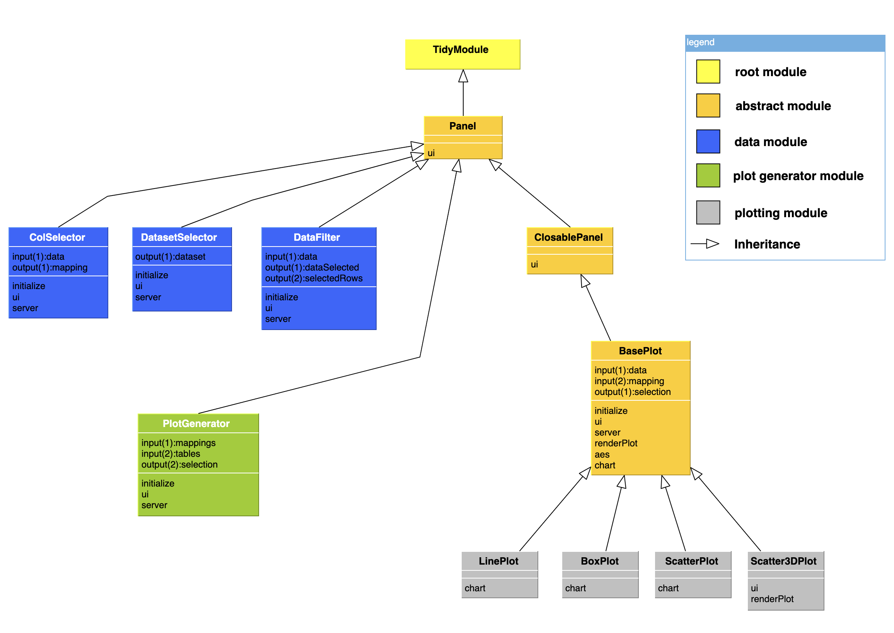

vignettes/tidymodules.Rmd
tidymodules.RmdThis vignette aims to provide a high level introduction to tidymodules. We recommend reading this article for anyone who is new to tidymodules, especially those tidymodules module “consumers”, who use existing module classes as a “black-box” in their Shiny app development. This article includes the following topics:
If you would like to develop new tidymodules modules, please refer to the vignettes under “Articles”.
In conventional Shiny modules, communication between modules is realized through the following
callModule() functionserver() function.It can be challenging to keep track of the arbitrary number of input and output reactives for complex apps with many interacting modules.
To address this challenge, we introduced input/output ports as fields of the TidyModule class object in tidymodules. The concept is illustrated in the following diagram. In this example, Module1 and Module2 each have input and output ports that hold reactives. The ports defined in each modules provides a data structure that allow TidyModule to establish a communication between them.
The two modules are connected via a tidymodules pipe operator
%x>y% where x and y could be any numbers from 1 to 10.
For example,%1>1% means the left module’s first output
port (x = 1) is mapped to the first input port (y = 1) of the right
module. Multiple connected tidymodules modules with such directed edges
form a directed graph network, which will be further discussed later in
this article.
To find out the port structure, simply print the module object on the
console. The following example shows that the Addition
module has one input port named “left” and one output port named “total”
that are both empty, i.e. not being assigned an input reactive (input
ports) or injected into the server code (output ports).
library(shiny)
library(tidymodules)
source(system.file(package = "tidymodules", "shiny/examples/1_simple_addition/Addition.R"))
Addition$new()
#> Module Namespace Addition-1
#> Module Session global_session
#> - Class Addition << TidyModule << R6
#> - Input [1]
#> (1) left => Empty
#> - Output [1]
#> (1) total => EmptyThe basic workflow of using tidymodules modules in a Shiny app is the following
ui() using module ui()
methodsserver() inject tidymodules module
server() logic using callModules() or the
callModule() function of the module object, like
myMod$callModule().The workflow is illustrated in the following example, which is available at
library(tidymodules)
# source tidymodules Addition module definition
source(system.file(package = "tidymodules", "shiny/examples/1_simple_addition/Addition.R"))Notice that the namespace argument in $new() is optional
and tidymodules will automatically generate a namespace ID
if not provided.
# Instantiate two Addition module objects
Addition$new()
#> Module Namespace Addition-2
#> Module Session global_session
#> - Class Addition << TidyModule << R6
#> - Input [1]
#> (1) left => Empty
#> - Output [1]
#> (1) total => Empty
Addition$new()
#> Module Namespace Addition-3
#> Module Session global_session
#> - Class Addition << TidyModule << R6
#> - Input [1]
#> (1) left => Empty
#> - Output [1]
#> (1) total => EmptyAlso notice that it is not necessary to give a name to the
Addition$new() object. tidymodules provides
mod() or getMod() function to help users
conveniently retrieve module objects via their numerical ID or namespace
ID.
ui()
In the app ui(), we call the ui() method of
each module object.
ui <- fixedPage(
h2("tidymodules : Addition example"),
shiny::fluidRow(
sliderInput("first_number", label = "Enter your first number", min = 1, max = 100, value = 1), br(),
# Calling module ui() methods
mod(1)$ui(), br(),
mod(2)$ui(), br(),
"Total: ", textOutput("total_result")
)
)server() logic using
callModules()
Here we use the callModules() function to call the
server() methods for the two modules that we created.
server <- function(input, output, session) {
# call the server() functions for all existing tidymodules modules in the global environment
callModules()
}The module communication is established through the pipe operators:
first %>1% mod(1) %1>1% mod(2). Note that in
first must be a Shiny reactive value or endpoint in order
to server as an input to other tidymodules modules.
server <- function(input, output, session) {
# call the server() functions for all existing tidymodules modules in the global environment
callModules()
first <- reactive({
req(input$first_number)
})
# Setting up module commmunication
observe({
first %>1% mod(1) %1>1% mod(2)
})
output$total_result <- renderText({
result <- mod(2)$getOutput(1)
result()
})
}
shinyApp(ui, server)We also provide utility functions to help identify and connect ports using the port names. For more information about the pipe operators, refer to the functional documentation under “Reference” tab.
Tidymodules module objects are mananged by ModStore in
tidymodules. For example, in the
example 2 - Linkled scatter
you can find the sessions, module objects, edges and port mapping
diagram in the “Help | ModStore” tab.
Below is the module relationship network digram generated by
tidymodules using the visNetwork package.
For more details about class and ports inheritance, see article inheritance. The diagram below illustrates the relation between the classes defined in the example 4 of tidymodules .

You can list all Shiny examples that come with the
tidymodules package by the showExamples()
function. We recommend going through these examples to help you
understand the use patterns.
showExamples()
#> [1] "1_simple_addition" "2_linked_scatter" "3_nested_modules"
#> [4] "4_communication" "5_counter"We have already used the first example to illustrate the basic usage of tidymodules, below we briefly describe the other examples.
This example illustrates the tidymodules implementation of the classical Shiny module example of two linked scatter plots.
This example
illustrates constructing and using nested modules in the
tidymodules framework, as well as dynamically creating
tidymodules modules.
This is a comprehensive example to illustrate mutiple advanced features such as
combine_ports()